TFG: Análisis espacial de la universidad ETSAV
MÉTODOS DE AYUDA EN EL DISEÑO
Keywords: Revit, Dynamo, VR, Unity, Big Data, percepción de usuario
El objetivo de este trabajo es mostrar herramientas útiles en el diseño de espacios y cómo correlacionarlas para expandir su potencial. Para hacerlo se utiliza como caso de estudio un análisis de la funcionalidad de 4 espacios de la universidad ETSAV. Se define funcionalidad del espacio como la adecuación al uso, así como la flexibilidad, versatilidad y facilidad de adaptación a nuevos usos, necesidades y modos de habitar a lo largo de su ciclo de vida.
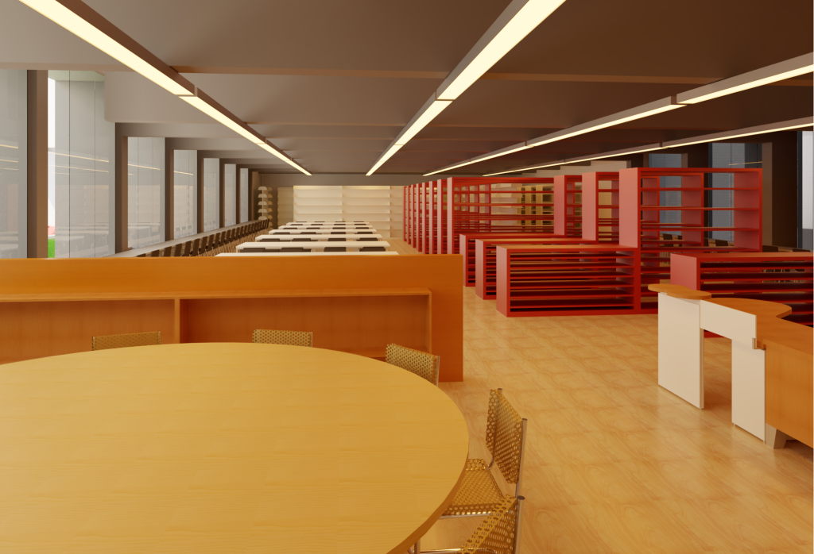
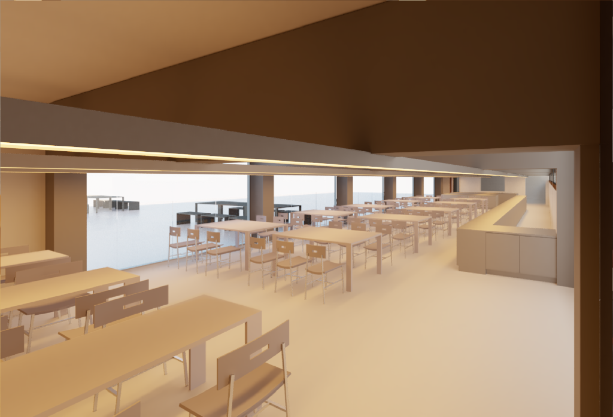
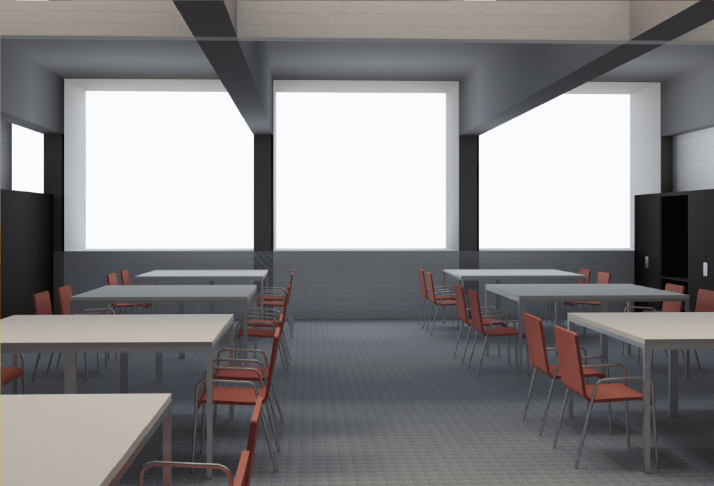
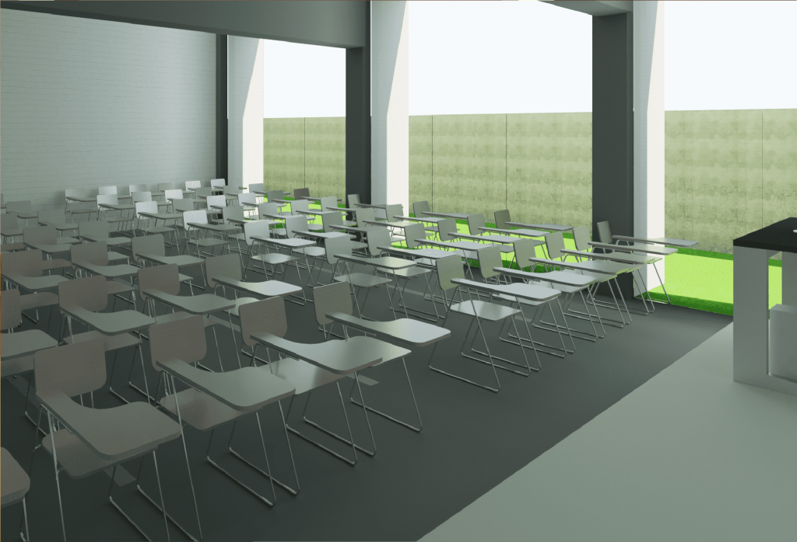
Para poder estudiar esta funcionalidad se han de conocer 3 bases:
- Uso para el cual están concebidos los espacios
- Características físicas de los espacios
- Uso que realizan las personas de estos
Este trabajo se compone de dos tipos de análisis paralelos, uno cuantitativo y otro cualitativo. En el cuantitativo se analiza la sintaxis espacial y las características cuantitativas del espacio y el segundo tratará sobre la cara cualitativa y el efecto del espacio en las personas.
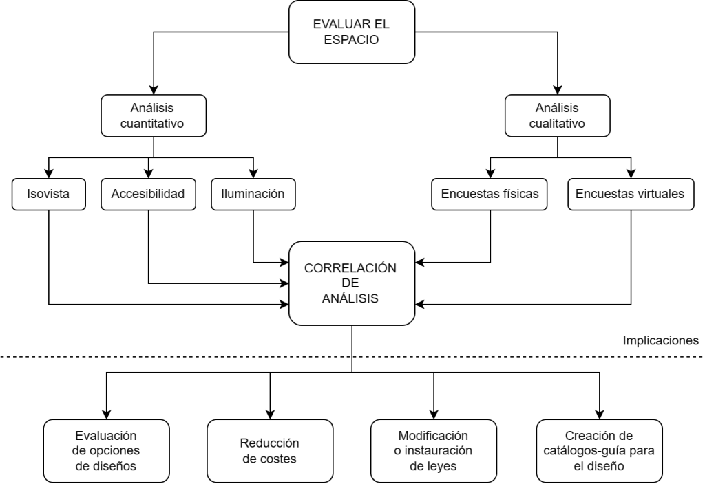
Para hacer más amena la explicación se propone el análisis de un espacio concreto: la cafetería. El primer paso es analizar las condiciones del espacio. Para esto se utiliza Dynamo, una plataforma dentro de REVIT que permite programar funciones y se suele usar para la parametrización. Primero se realiza una Isovista. Una Isovista analiza el espacio visible desde un punto concreto. En este caso, este centro será el punto donde existe un mayor flujo de personas. Los resultados se dan en forma de lista de datos, que indican valores como la proporción entre el largo y ancho del espacio o las distancias entre objetos.
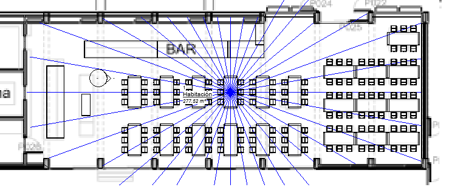
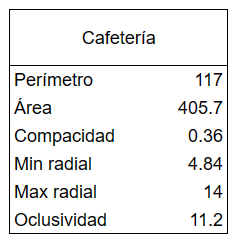
Luego se realiza un análisis de accesibilidad, que indica las zonas más recónditas y más centrales en el espacio. Por último, se lleva a cabo un análisis lumínico, para ver qué zonas quedan más y menos iluminadas. En este caso toda la cafetería tiene buena iluminación aunque hay una zona que depende únicamente de la iluminación artificial.
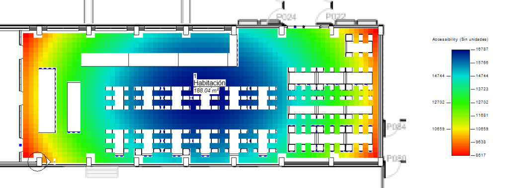
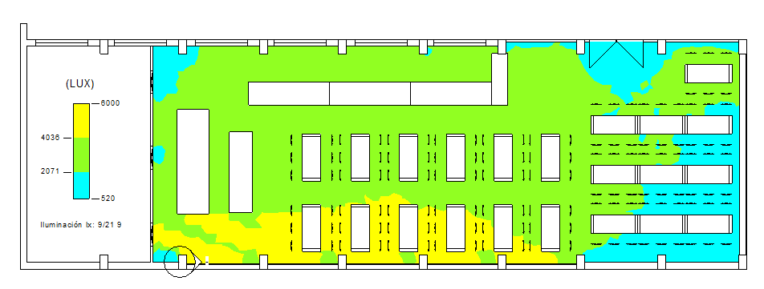
El siguiente paso será realizar el análisis cualitativo, donde una muestra de posibles usuarios (estudiantes y profesores de arquitectura de otras universidades) visitan el espacio proyectado de manera virtual y responden a preguntas sobre su uso. A su vez, también se encuesta a una muestra de estudiantes y profesores de la misma universidad. Las respuestas de ambas encuestas se pueden comparar para verificar el parecido del entorno virtual al real. Las respuestas en el entorno virtual se realizan a través de una herramienta llamada VREVAL.
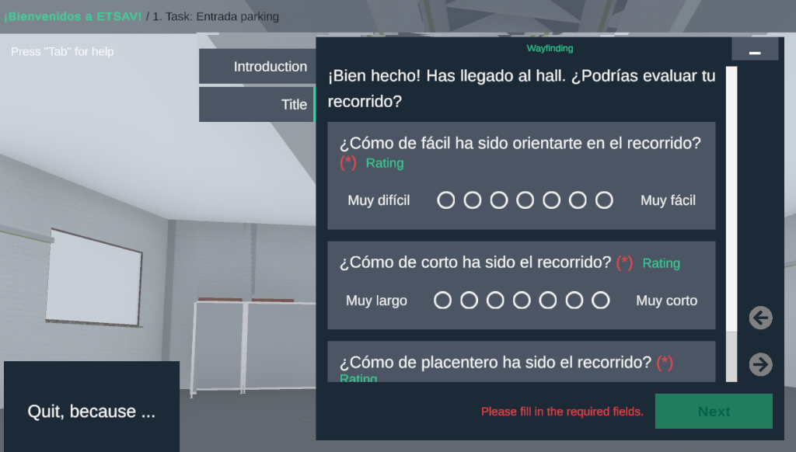
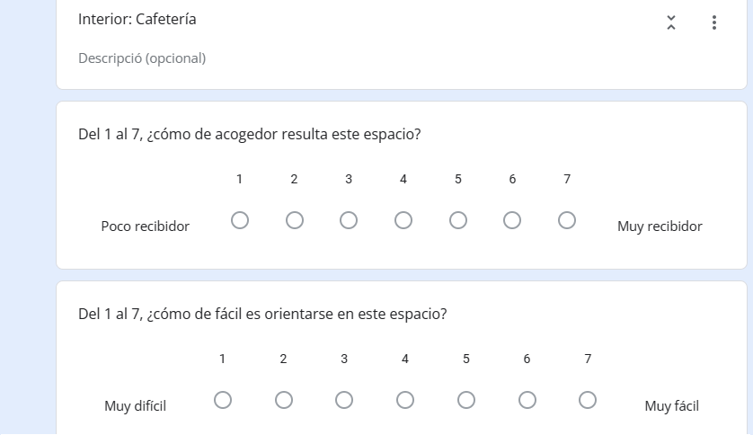
Una vez obtenidos los datos de las dos maneras que hemos visto llegar a una 3era parte y es evaluar los resultados obtenidos. En este trabajo se exploran dos posibles maneras de correlacionar los análisis.
La primera consiste en la correlación de las características espaciales obtenidas en la Isovista con las valoraciones de las encuestas. Para ello se ordenan de forma ascendente los espacios y sus características según las valoraciones del 1 al 7 obtenidas en relación a 4 parámetros: facilidad de orientación, capacidad de ser acogedor, ordenación y adaptación al uso. Para cada parámetro se calcula el coeficiente de Pearson con cada una de las características físicas, intentando encontrar alguna relación fuerte.
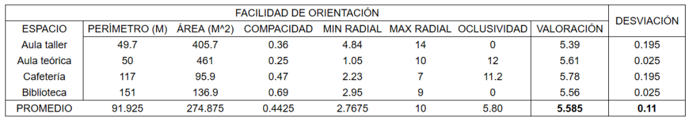
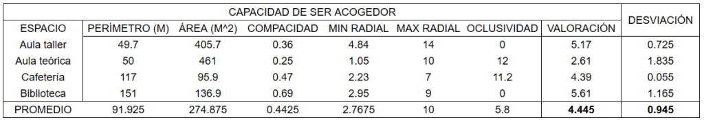
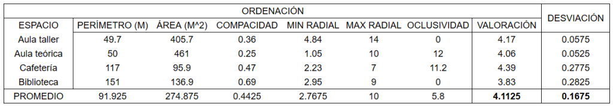
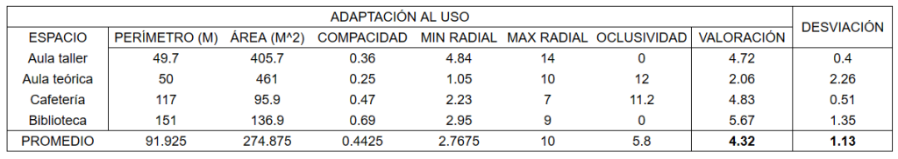
De esta manera intentamos encontrar una relación, como es este caso donde una compacidad mayor lleva una mejor adaptación al uso. Sin embargo, hay que tener en cuenta que los datos obtenidos para este caso en concreto no son válidos, puesto que equivalen a espacios con funciones muy diferentes y para tener unos resultados verídicos necesitamos comparar nuestra cafetería con otras cafeterías de otras universidades.
La segunda manera de comparar resultados es más empírica y consiste en estudiar las zonas dentro del espacio. A partir de los análisis de accesibilidad e iluminación se coge la que se considere la mejor zona para la función deseada. En el caso de la cafetería, ya que es un lugar de ocio, supongamos que decidimos que dicha zona es la que se encuentre alejada del flujo de personas pero con una visual al exterior de la sala. Se escoge entonces la que se consideraría por sus características la mejor zona y se compara con los resultados obtenidos en la encuesta.
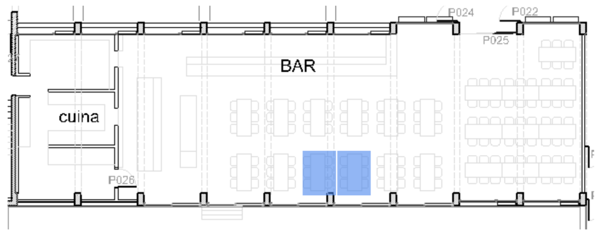
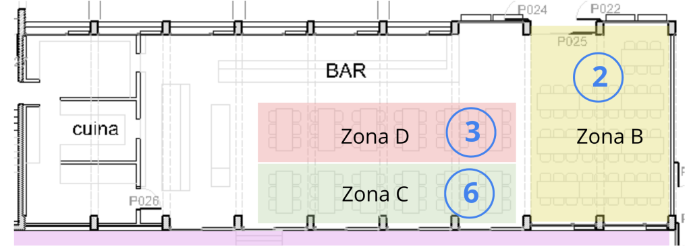
El uso de este tipo de análisis es muy útil en todas las etapas del diseño, ya que no sólo permite tener una mejor comprensión espacial del proyecto sino que permite jugar con las diferentes opciones que tenemos en la cabeza, sobre todo en el caso de personas inexpertas como nosotros los estudiantes de arquitectura. Es una manera fácil de explorar nuestros proyectos y puede tener grandes implicaciones: como el ahorro de tiempo e inversión por problemas evitables, la modificación o instauración de leyes o incluso la creación de catálogos o guías de diseño, como lo fue en su época los diez tratados de arquitectura de Vitruvio.